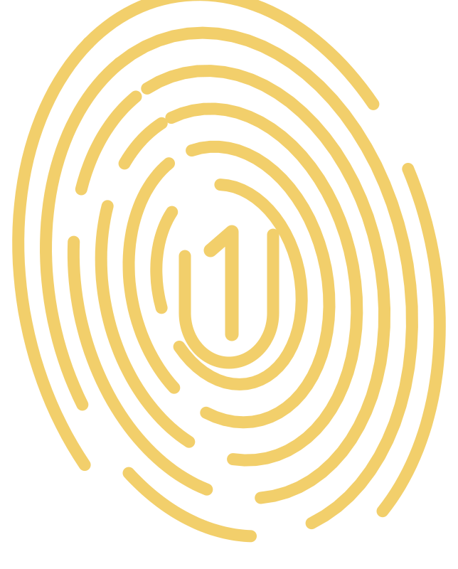

全球文明共建者倡议 · 筹建阶段
汇聚全球文明共建者
共建下一个文明
一个加密文明 ID，一个统一的人类文明身份。没有国籍、人种与信仰的界限——自由意志，自愿贡献，共建文明，共创文明。
距第一期目标还差（CHF）
100'000'000
已收到捐赠CHF 0 / 100'000'000

QCF CIVILIZATION ID · x
2026000001
One Human. One Civilization ID. · x 2026000002
0已注册文明 ID
0已验证 ID
0 今日发放贡献值
下一个将签发的文明 ID2026000002
文明 ID 目标0 / 1'000'000
ONE HUMANITY · ONE ID
一人一个文明 ID
加密身份
10 位文明 ID（4 位纪元前缀 + 6 位序号）：2026 创世纪元从 2026000001 起逐一签发，满 999999 后进入 2029 纪元（2029000001 起），附验证码与身份密钥，由基金会数字签名，可公开核验。
文明使者之名
你可以为自己取一个全新的文明使者名字。原有身份可选择隐藏，对外只展示 ID 号或新名字。
贡献归于此 ID
未来的每一份文明贡献都记录在你的 ID 下，以金色小 Q 计量。
CONTRIBUTION · Q
每一次行动，都被文明记住
+1
每日登录
+1
分享链接（每日上限 10）
+5
注册文明 ID
+100
发起文明倡议
Q 是不可转让的贡献值，不是加密货币，没有货币价值，不可买卖。
THREE PILLARS
三大方向
QCF-E
量子科技赋能能源
支持量子计算、量子传感与材料模拟在能源研究中的应用。以同行评审的科学为边界，不宣传任何未经验证的“能量”概念。
QCF-L
量子驱动生命科学
支持量子计算、量子传感与 AI 在药物发现、精准医学与健康长寿研究中的应用；以同行评审的科学为边界，不提供医疗建议，不作健康功效承诺。
QCF-U
量子文明大学
以研究院与开放课程的形式起步（愿景）：记录文明、研究文明、传承文明、共建文明。学位与正式高等教育须取得相应许可。
CIVILIZATION INITIATIVES
人人都可以发起文明倡议
持有文明 ID 的共建者可就任何主题发起倡议；支持者自愿捐赠；94% 的资金由共建者投票决定用途，基金会收取 6% 平台与治理服务费。
x94%
6%
共建者投票支出 · 基金会服务费
GENESIS
创世文明 ID
第一个文明 ID 2026000001 属于创始者 Jessica Sage。全球文明共建者倡议由此开始。
CIVILIZATION ID · GENESIS
2026 000001
Jessica Sage · 创始者
2026-10-03 · QCF-INIT-CB-20261003-001
成为下一位文明共建者
共建者基建费 20 CHF / USD / EUR 每月（含加密文明 ID、验证与身份密钥），将在基金会正式登记后开放。现在可免费登记意向并预领演示 ID。